Topological data analysis & applications in dynamics
XIMENA FERNANDEZ
UK Centre for Topological Data Analysis
Durham University
BIOMAT 2022

Outline
- Day 1. Topological data analysis
- Day 2. Hands on: computational topology in action
- Day 3. Applications in dynamics
Topological data analysis
Goal: Study data sets with techniques coming from geometry and topology.
Topological visualization
Clustering (UMAP)
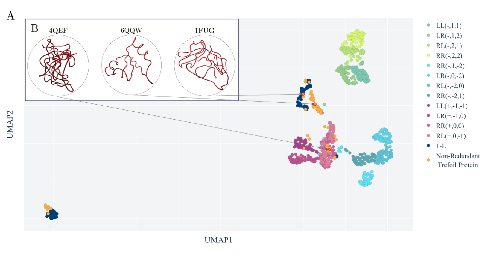[A topological selection of folding pathways from native states of knotted proteins. Barbensi et. al., Symmetry, 2021]
Topological visualization
Networks (MAPPER)
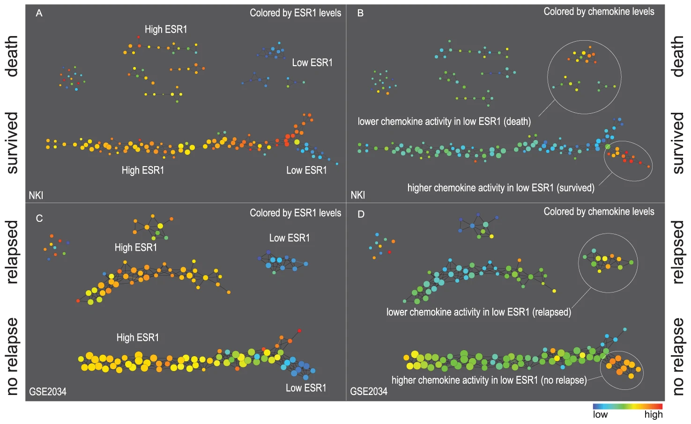[Extracting insights from the shape of complex data using topology. Lum et al., Nature, 2013]
Topological visualization
Dimnsionality reduction (ISOMAP)
[Toroidal topology of population activity in grid cells. Gardner et al., Nature, 2022]
Topological descriptors of shape

[Toroidal topology of population activity in grid cells. Gardner et al., Nature, 2022]
Topology
Topology
The goal of topology is to classify spaces depending on its shape.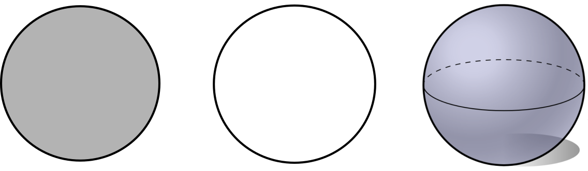
Betti numbers
The $d^{th}$ Betti number counts the number of 'independent' $d$-dimensional holes.
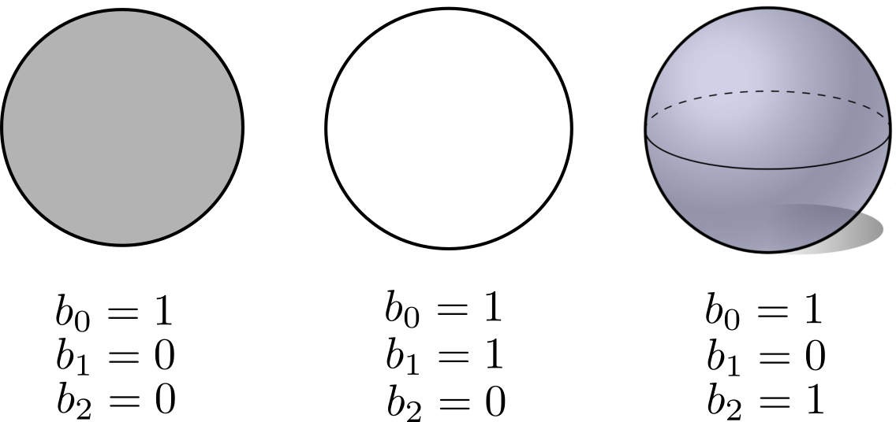Betti numbers
The $d^{th}$ Betti number counts the number of 'independent' $d$-dimensional holes.
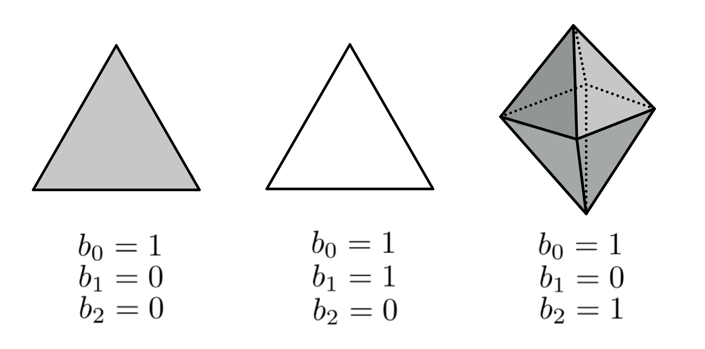Combinatorial Topology
- Encodes topological spaces combinatorially for computational purposes.
- Encodes topological features in terms of mathematical quantities that are invariant to homotopy equivalences and easy to compute.
Simplicial Complexes
Simplicial complexes are combinatorial objects built of small convex bricks called simplices.
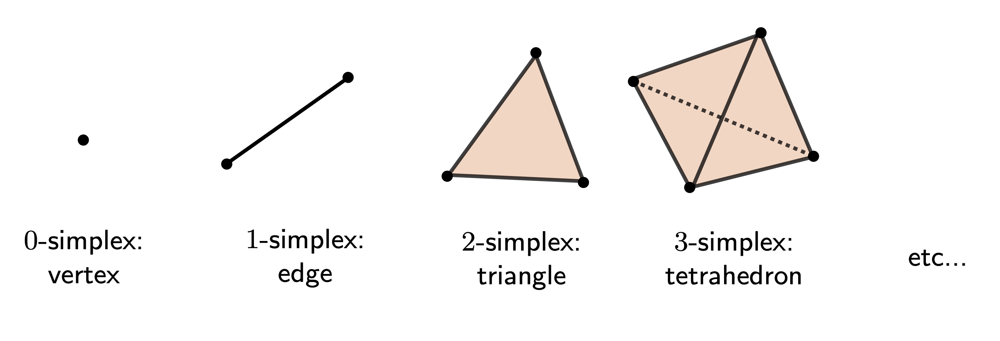Simplicial Complexes
Simplicial complexes are combinatorial objects built of small convex bricks called simplices.
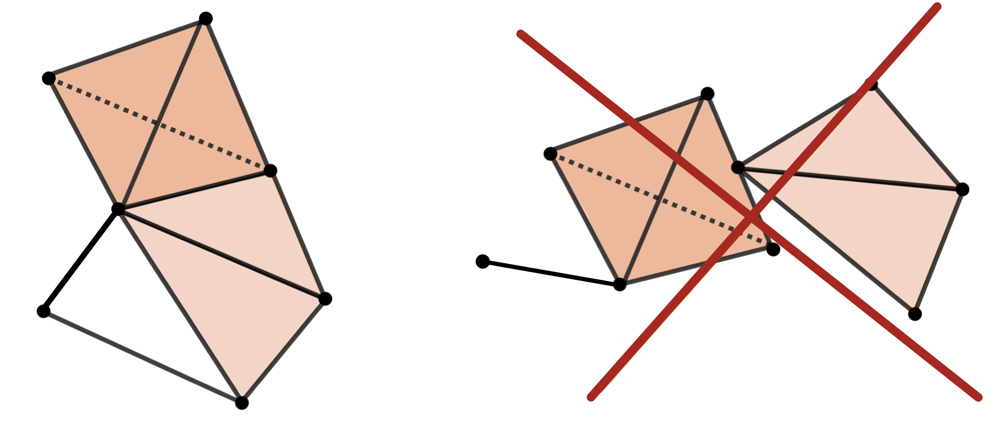Simplicial Complexes
Simplicial complexes can be stored as a list of non-empty subsets of its vertices.
$K = \{\{a\}, \{b\}, \{c\}, \{a, b\}, \{b, c\}, \{a, c\}\}$ \[ \begin{array}{cccc} &ab&bc&ac\\ \end{array}\\ \begin{array}{c} a\\b\\c \end{array} \left(\begin{array}{@{}c@{}c@{}c@{}} 1 & 0 & 1 \\ 1 & 1 & 0 \\ 0 & 1 & 1 \\ \end{array}\right) \]
Homology
Homology
- The homology group $H_d$ characterizes the $d$-dimensional holes in a topological space.
- The $d$-th Betti number $b_d$ is the rank of the group $H_d$.
Homology
Q: How to algorithmically compute homology of simplicial complexes?
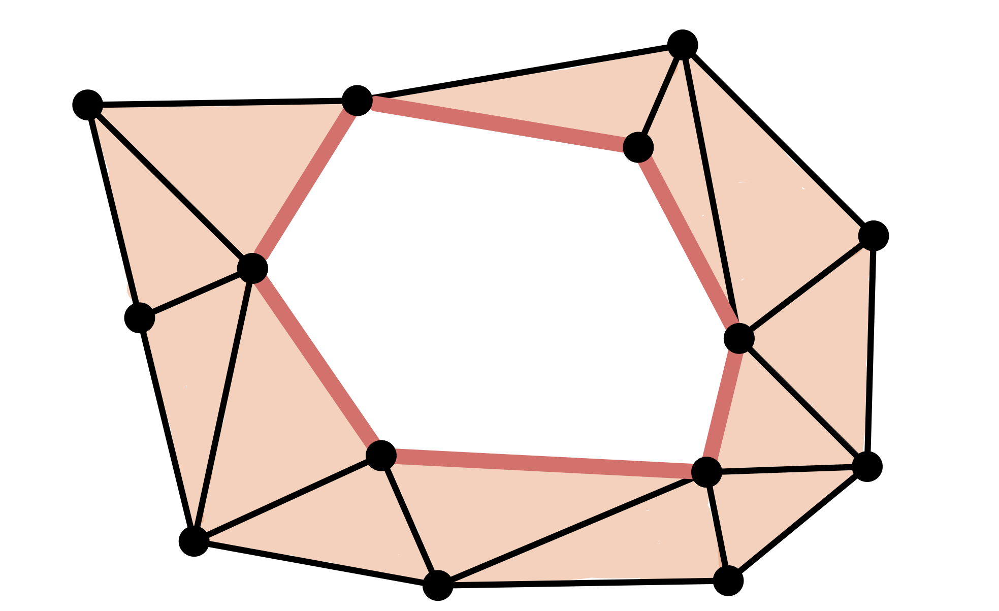Homology
Q: How to algorithmically compute homology of simplicial complexes?
$\bullet$ Chain
$C = [v_0,v_1]+[v_1,v_2]+[v_2,v_3]+[v_3,v_4]+[v_4,v_5]+[v_5,v_0]$
Homology
Q: How to algorithmically compute homology of simplicial complexes?
$\bullet$ Chain
$C = [v_0,v_1]+[v_1,v_2]+[v_2,v_3]+[v_3,v_4]+[v_4,v_5]+[v_5,v_0]$
$\bullet$ Cycle
$\partial C = [v_1]-[v_0]+[v_2]-[v_1]+[v_3]-[v_2]+[v_4]-[v_3]+[v_5]\\-[v_4]+[v_0]-[v_5] = 0$
Homology
Q: How to algorithmically compute homology of simplicial complexes?
$\bullet$ Chain
$C = [v_0,v_1]+[v_1,v_2]+[v_2,v_3]+[v_3,v_4]+[v_4,v_5]+[v_5,v_0]$
$\bullet$ Cycle
$\partial C = [v_1]-[v_0]+[v_2]-[v_1]+[v_3]-[v_2]+[v_4]-[v_3]+[v_5] \\ -[v_4]+[v_0]-[v_5] = 0$
$\bullet$ Non boundary
Homology
Q: How to algorithmically compute homology of simplicial complexes?
- A $d$-chain is a formal sum of $d$-simplices.
The boundary of a $d$-simplex is the alternate chain made of its $(d − 1)$-simplices.
This operation extents linearly to chains of $d$-simplices.
- A $d$-cycle is a $d$-chain $C$ s.t. $\partial C = 0$.
- A $d$-cycle is a boundary if there exist a $(d+1)$-chain $C'$ such that $\partial (C') = C$.
- Homology in degree $d$ is the quotient of cycles over boundaries. \[H_d = \frac{Z_d}{B_d}\]
$C = [v_0,v_1]+[v_1,v_2]+[v_2,v_3]+[v_3,v_4]+[v_4,v_5]+[v_5,v_0]$
$\partial_d[v_1,\dots,v_{d+1}] = \sum_{i=1}^{d+1}(-1)^i[v_1,\dots,v_{i−1},v_{i+1},\dots,v_{d+1}]$
$\partial C = [v_1]-[v_0]+[v_2]-[v_1]+[v_3]-[v_2]+[v_4]-[v_3]+[v_5]-[v_4]+[v_0]-[v_5] = 0$
Homology
Q: How to algorithmically compute homology of simplicial complexes?
An element in $H_d$ is the equivalent class of a cycle modulo boundaries
\[C\simeq C' \Leftrightarrow C+C'\in \mathrm{Im} \partial\]Homology
Q: How to algorithmically compute homology of simplicial complexes?
Algorithm
- Calculate boundary operator matrices.
- Bring each matrix into Smith normal form (similar to Gaussian elimination).
- The $d^{th}$ Betti number $b_d$ is computed as rank $Z_d$ - rank $B_d$, where
- rank $Z_d$ is the number of zero columns of the boundary matrix of $\partial_d$,
- rank $B_d$ is the number of non-zero rows of the boundary matrix of $\partial_{d+1}$.
$b_0 = 1$
$b_1 = 1$
$b_2 = 0$
Topological inference
Let $X$ be a topological space and let $\mathbb{X}_n = \{x_1,...,x_n\}$ be a finite sample of $X$.
Q: How to infer topological properties of $X$ from $\mathbb{X}_n$?


Persistence
Point cloud

Persistence
Point cloud
Evolving thickenings
Persistence
Point cloud
Evolving thickenings
Filtration of simplicial complexes

From point clouds to (filtered) complexes
Let $(\mathbb{X}_n, d)$ be a finite set of points with a metric.
Given a parameter $\epsilon>0$, the Vietoris-Rips complex $V_{\epsilon}$ is defined as \[V_{\epsilon}(\mathbb{X}_n) := \{\sigma \subseteq \mathbb{X}_n\colon \forall u,v\in \sigma, d(u,v)\leq \epsilon\}\]
Equivalently, $V_\epsilon$ contains all simplices whose diameter is less than or equal to $\epsilon$.
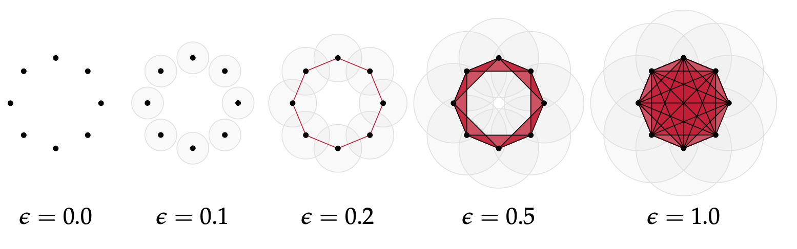Image from: Bastian Rieck. Topological Data Analysis for Machine Learning.
From point clouds to (filtered) complexes
Let $(\mathbb{X}_n, d)$ be a finite set of points wiht a metric.
Given a parameter $\epsilon>0$, the Vietoris-Rips complex $V_{\epsilon}$ is defined as \[V_{\epsilon}(\mathbb{X}_n) := \{\sigma \subseteq \mathbb{X}_n\colon \forall u,v\in \sigma, d(u,v)\leq \epsilon\}\]
Equivalently, $V_\epsilon$ contains all simplices whose diameter is less than or equal to $\epsilon$.
Idea: Track the evolution of the homology of $V_\epsilon$ as the value of $\epsilon$ increases.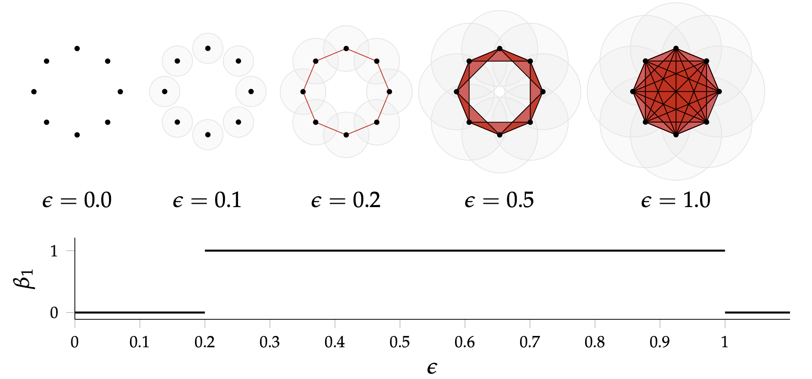
Image from: Bastian Rieck. Topological Data Analysis for Machine Learning.
Persistent homology
- A filtration of simplicial complexes is a sequence of nested simplicial complexes \[K_0 \hookrightarrow K_1 \hookrightarrow K_2 \hookrightarrow \dots \hookrightarrow K_s \]
- A filtration $\{K_i\}$ of simplicial complexes induces a sequence of homology groups $\{H_d(K_i)\}$ along with homomorphisms $f_d^{i,j}:H_d(K_i) \to H_d(K_j)$ induced by $K_i\subseteq K_j$ every time $i\leq j$ \[H_d(K_0) \rightarrow H_d(K_1) \rightarrow H_d(K_2) \rightarrow \dots \rightarrow H_d(K_s) .\]
- Given $i\leq j$, the persistent homology group $H_d^{i,j}$ is defined as \[H_d^{i,j} :=\frac{Z_d(K_i)}{B_d(K_j)\cap Z_d(K_i)}\] i.e., all the homology classes of $K_i$ that are still present in $K_j$.
- Persistent homology classes.
- Birth in $K_i$: $C\in H_d(K_i)$, but $C\notin H_d^{i−1,i}$
- Death in $K_j$: once $C$ is created in $K_i$, $C\in H_d^{i, j-1}$ but $C\notin H_d^{i, j}$
Persistent homology
- Persistent homology classes.
- Birth in $K_i$: $C\in H_d(K_i)$, but $C\notin H_d^{i−1,i}$
- Death in $K_j$: once $C$ is created in $K_i$, $C\in H_d^{i, j-1}$ but $C\notin H_d^{i, j}$
- The birth and death of homology classes determine a barcode decomposition.
Computation of persistent homology
- Algorithm.
As a consecuence of the Structure Theorem, the computation of persistent homology reduces to the algorithm for computation of regular homology.
[Zomorodian, A.; Carlsson, G.. Computing persistent homology. Discrete Comput. Geom. 33 (2005), no. 2, 249--274.]
- Software.
There are open access implementations to compute persistent homology in- R,
- Julia,
- C++,
- Matlab and
- Python (tomorrow).
There is also a browser version of the software Ripser.
From Persistent homology
to data analysis
Neuroscience
Gardner, R.J., Hermansen, E., Pachitariu, M. et al. Toroidal topology of population activity in grid cells. Nature 602, 123–128 (2022)
Grid cells
- Part of an environment-independent spatial coordinate system.
- Placed in the medial entorhinal cortex (mEC).
- Discovered by Edvard and May-Britt Moser in 2005.
T. Hafting, M. Fyhn, S, Molden, M.B. Moser, E.I. Moser. Microstructure of a spatial map in the entorhinal cortex. Nature. 2005 Aug; 436(7052) 801-806. - Awarded with Nobel Prize in Physiology or Medicine 2014.
Grid cells
- Part of an environment-independent spatial coordinate system.
- Placed in the medial entorhinal cortex (mEC).
- Discovered by Edvard and May-Britt Moser in 2005.
T. Hafting, M. Fyhn, S, Molden, M.B. Moser, E.I. Moser. Microstructure of a spatial map in the entorhinal cortex. Nature. 2005 Aug; 436(7052) 801-806. - Awarded with Nobel Prize in Physiology or Medicine 2014.
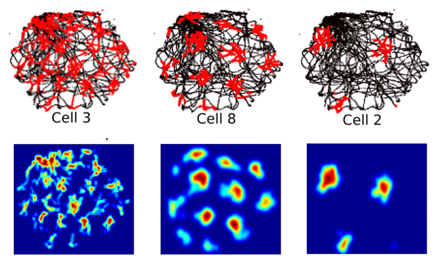
Topology of the neural activity

Topology of the neural activity
Toroidal topology of population activity in grid cells. Nature 602, 123–128 (2022)
Gardner R, Hermansen E, Pachitariu M, Burak Y, N, Dunn B, Moser M B, Moser E.
Applications to data analysis
- Neuroscience, neural activity (Day 2).
[Curto, Carina. What can topology tell us about the neural code? Bull. Amer. Math. Soc. (N.S.) 54 (2017), no. 1, 63--78]
[Gardner, R.J., Hermansen, E., Pachitariu, M. et al. Toroidal topology of population activity in grid cells. Nature 602, 123–128 (2022)] - Chemistry, energy landscape of molecules (Day 2).
[Martin, S., Thompson, A., Coutsias, E. A., & Watson, J. P. (2010). Topology of cyclo-octane energy landscape. The Journal of Chemical Physics, 132(23), 234115.]
- Proteins classification (Day 2).
[Kovacev-Nikolic V, Bubenik P, Nikolić D, Heo G. Using persistent homology and dynamical distances to analyze protein binding. Stat Appl Genet Mol Biol. 2016 Mar;15(1):19-38.]
[Cang Z, Mu L, Wu K, et al. (2015). A topological approach for protein classification. Computational and Mathematical Biophysics, 3(1)]
[Xia, K. & Wei, G. W. (2014). Persistent homology analysis of protein structure, flexibility, and folding. International Journal for Numerical Methods in Biomedical Engineering, 30(8), 814–844] - Dynamics and time series analysis (Day 3).
[Perea, J A, Harer, J. Sliding Windows and Persistence: An Application of Topological Methods to Signal Analysis. Found Comput Math 15, 799–838 (2015).]
[Perea J A, Topological Time Series Analysis, Notices of the American Mathematical Society, vol. 66, no. 5, pp. 686-694, May 2019.]
[Fernandez X., Borghini E., Mindlin G., Groisman P. Intrinsic persistent homology via density-based metric learning, 2020. arXiv:2012.07621]
[Fernandez X., Mateos D. Topology of epilepsy seizures. Work in progress, 2022.]
Take-home messages
Take-home messages
- Topological spaces can be encoded combinatorially as simplicial complexes.
- Homology groups characterise holes in topological spaces.
- The computation of homology groups boils down to linear algebra.
Take-home messages
- Topological spaces can be encoded combinatorially as simplicial complexes.
- Homology groups characterise holes in topological spaces.
- The computation of homology groups boils down to linear algebra.
- Point clouds can be converted in filtrations of simplicial complexes.
- Persistent homology is the multi-scale equivalent of homology.
- The computation of persistent homology also boils down to linear algebra.
Take-home messages
- Topological spaces can be encoded combinatorially as simplicial complexes.
- Homology groups characterise holes in topological spaces.
- The computation of homology groups boils down to linear algebra.
- Point clouds can be converted in filtrations of simplicial complexes.
- Persistent homology is the multi-scale equivalent of homology.
- The computation of persistent homology also boils down to linear algebra.
- Data sets can be viewed as samples of an (unknown) topological space.
- Persistent homology classes capture topological features in data.
Day 2
Hands on: computational topology in action
- Computation of persistent homology in Python.
- Topology of real data sets.
GitHub ximenafernandez/biomat2022
Thanks!